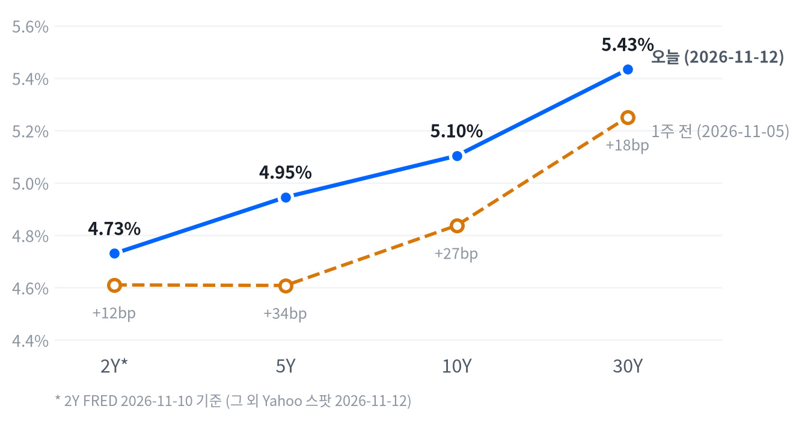

엔비디아 이사회가 젠슨 황 CEO의 사임을 수리하자 엔비디아는 개장 직후 급락했다가 4.34% 하락으로 마감했고, 브로드컴과 AMD가 5%대 올라 S&P 500은 0.35% 내리는 데 그쳤다. 대형 지수는 버텼지만 평균적인 종목은 지수보다 더 내렸고 러셀2000은 저점권에서 끝났다.
미국이 이란과 합의할 필요가 없다고 밝힌 뒤 유가가 3% 넘게 올랐고, 추가 인상 기대와 함께 10년물 금리가 5.103%로 올라섰다. 엔비디아의 할인이 한 종목에 머무는지는 11월 16일 종가에서, 에너지 반등이 하루짜리인지는 11월 19일 종가에서 확인한다.
11월 12일 엔비디아 이사회가 젠슨 황의 사장·CEO·이사직 사임을 즉시 수리하고 콜레트 크레스 CFO를 임시 CEO로 세웠다. 엔비디아는 개장 직후 급락했다가 오전에 낙폭 대부분을 되찾아 4.34% 하락으로 마감했다. 같은 업종의 브로드컴과 AMD는 엔비디아 경쟁사가 반사이익을 얻는다는 기대로 5%대 올랐다는 보도가 나왔다. 오후에는 유가 반등 속에 국채금리가 다시 오르고 30년물 입찰 응찰이 얇게 나왔으며, 지수는 오전 상승분을 내줬다.
개장 급락을 하루 안에 대부분 되돌린 것은 CEO 교체가 이미 상당 부분 예상된 악재였다는 뜻일 수 있다. 그러나 경쟁사가 같은 날 강했다는 점에서, 할인은 반도체 업종 전체가 아니라 엔비디아 한 종목의 지배구조 위험에 붙어 있다고 본다. 11월 9일 종가 대비 엔비디아는 S&P 500보다 7.547%p 뒤처졌다. 가장 강한 반론은 경쟁사 강세가 엔비디아를 판 자금이 같은 업종 안에서 옮겨 간 것일 뿐 점유율 전망이 바뀐 것은 아니라는 설명이다. 옵션 가격이나 포지션 자료가 없어 시장이 이 할인의 지속을 얼마나 가격에 넣었는지는 모른다. 에너지는 별개의 이야기다. 월초 유가 급락이 빠른 종전과 해협 정상화를 가격에 넣은 것이라면, 미국이 합의 자체가 필요 없다고 밝힌 것은 그 가정의 시점을 뒤로 미는 재료라 에너지주의 상대 강세가 다음 주까지 남는다고 본다. 반론은 추가 공습 가능성이 낮게 언급됐고 실제 공급 차질 보도가 없어 하루짜리 헤드라인 반등이라는 설명이다.
반도체·AI 하드웨어 테마에서는 엔비디아 단일 종목의 지배구조 위험과 업종 흐름을 따로 볼 근거가 하나 더 생겼다. 엔비디아 대 경쟁사의 상대가치로 표현할 만큼 두 종목군의 비교 자료가 쌓이지 않아 아이디어로 올리지 않고, 다음 재료는 11월 18일 하원 위원회의 황 전 CEO 증언 요구 시한이다. 에너지 테마는 하루 반등만으로 상대 강세의 근거가 강화됐다고 보기 이르고, 11월 19일 종가까지 5거래일을 확인 기간으로 둔다. 에너지 섹터 ETF로 보면 유가 선물의 롤 문제는 피하지만 대형 통합 석유사 비중이 커 유가와 다르게 움직일 수 있다. 독자의 보유·한도와 거래 비용 자료가 없어 새 매매 아이디어는 내지 않는다.
에너지 판단은 11월 12일 종가 대비 11월 19일 종가의 XLE 누적 등락률에서 S&P 500 누적 등락률을 뺀 값이 +3.18%p 이상이면 빠른 종전 가정이 되돌려졌다는 판단을 뒷받침하고, -3.18%p 이하이면 판단은 약해지며 하루짜리 헤드라인 반등을 우선 설명으로 본다. 그 사이면 결론을 내지 않는다. 방향이 맞아도 같은 기간 WTI 누적 변화가 XLE와 반대 부호이면 유가가 아닌 업종 간 자금 이동으로 보고 원인은 판단하지 않는다. 엔비디아 판단은 11월 9일 종가 대비 11월 16일 종가에서 엔비디아가 S&P 500보다 3.89%p 이상 뒤처져 있는지로 결론을 낸다.
| 지수 | 종가 | 등락 | 기준일 |
|---|---|---|---|
| 닛케이225 | 61,248.59 | +1.31% | 11월 11일 |
| 항셍 | 24,315.92 | -0.98% | 11월 11일 |
| 상해종합 | 3,680.64 | +0.46% | 11월 11일 |
| DAX | 26,662.77 | +1.20% | 11월 11일 |
| FTSE100 | 10,863.09 | +0.25% | 11월 12일 |
| 유로스톡스50 | 6,393.39 | +1.04% | 11월 11일 |
| VIX | 18.70 | +1.21p | 11월 12일 |
아시아 세 지수와 DAX·유로스톡스50은 들어온 마지막 종가인 11월 11일 값이고, FTSE100과 VIX는 11월 12일 값이다. VIX 등락은 포인트다.
아시아·유럽과 미국이 엇갈렸다. 들어온 마지막 종가로 아시아는 평균 0.26%, 유럽은 0.83% 올랐지만 미국은 내렸다. 아시아 안에서도 갈렸다. 닛케이225는 1.31% 올랐고 항셍은 0.98% 내렸으며, 세 지수 모두 엔비디아 사임 발표 전인 11월 11일 장이다. 유럽은 11월 12일 종가가 들어온 FTSE100이 0.25% 올랐고, DAX와 유로스톡스50은 11월 11일 값이다.
밤사이 S&P 선물(ES)은 전날 16:30(ET) 고점에서 12일 08:00(ET) 저점까지 1.01% 범위를 움직였고, 나스닥 선물(NQ)은 전날 16:00(ET) 고점에서 같은 시각 저점까지 1.77% 범위를 움직였다. 그 사이 엔비디아 이사회가 황 CEO의 사임을 수리했다. 현물은 S&P -0.9%, 나스닥 -1.46%, 러셀2000 -0.67%의 갭으로 하락 출발했다.
평균적인 종목은 지수보다 더 내렸다. 동일가중 S&P에서 시총가중 지수를 뺀 수익률 차이가 -0.51%p로, 참여도는 고르게 내림 쪽이었다. 하락이 일부 대형주가 아니라 넓게 퍼졌다는 뜻이다. S&P와 나스닥은 하루 범위의 중간에서 끝났지만, 러셀2000은 오후 내내 밀려 저점권에서 끝났다.
중간·저점권 마감의 경계는 최근 2,259거래일의 일간 종가 위치 이력으로 다시 잰 기준이다.
엔비디아 지배구조 충격이 반도체 업종 안의 순서를 바꾸고, 유가 반등과 추가 인상 기대가 국채금리를 끌어올린 날이다. 금은 금리 상승과 함께 크게 내렸고, 섹터 가운데 에너지만 1% 넘게 올랐다. 장 마감 뒤에는 시스코가 예상을 웃돈 분기 실적과 함께 AI 인프라 주문 전망을 올렸고, 세레브라스가 시간외에서 18% 올랐다는 보도가 나왔다. 엔비디아에는 황 전 CEO의 추가 혼외 관계와 화웨이 연관 가능성에 관한 보도가 이어졌다. 모두 정규장 종가 뒤의 재료다.
출처: CNBC, Reuters
| 지수 | 종가 | 등락률 |
|---|---|---|
| S&P500 성장주 | 133.82 | -0.26% |
| S&P500 | 7,592.40 | -0.35% |
| 다우존스 | 52,297.09 | -0.36% |
| 나스닥 | 25,366.09 | -0.39% |
| S&P500 가치주 | 241.68 | -0.43% |
| 러셀2000 | 2,799.06 | -1.66% |
| 섹터 | 등락률 |
|---|---|
| 에너지 | +1.51% |
| 유틸리티 | -0.02% |
| 기술 | -0.34% |
| 필수소비재 | -0.43% |
| 경기소비재 | -0.44% |
| 부동산 | -0.52% |
| 헬스케어 | -0.59% |
| 금융 | -0.72% |
| 산업재 | -0.89% |
| 커뮤니케이션서비스 | -0.96% |
| 소재 | -1.28% |
엔비디아 사임 충격에도 대형 지수는 약보합으로 버텼다. S&P 500은 0.35% 내린 7,592, 나스닥은 0.39% 내린 25,366, 다우는 0.36% 내린 52,297로 끝났고, 움직임은 평소 하루 폭의 절반에도 못 미쳤다. 러셀2000만 1.66% 내린 2,799로 평소의 1.5배쯤 밀렸다.
하루 안의 폭은 종가보다 훨씬 컸다. S&P는 시가가 그날의 저점이었고 11:00(ET) 무렵 7,653까지 올라 잠시 전날 종가를 넘었다가, 오후에 시가 이후 상승분의 절반 넘게 내줬다. 엔비디아도 같은 시각 167달러 위까지 올라 시가보다 12% 가까이 반등했고, 그 근처에서 마감했다. 러셀2000은 같은 고점 뒤 오후 내내 밀려 15:30(ET) 무렵 저점 근처에서 끝났다. 오후 되밀림은 10년물 금리가 다시 오르고 30년물 입찰 결과가 나온 시간과 겹친다.
지수 하락은 커뮤니케이션서비스와 기술이 가장 많이 만들었다. 추정 기여도로 커뮤니케이션서비스가 -0.12%p, 기술이 -0.11%p, 금융이 -0.08%p, 경기소비재가 -0.06%p, 헬스케어와 산업재가 각각 -0.05%p였고, 에너지만 +0.04%p를 보탰다. 필수소비재는 -0.01%p, 유틸리티는 0.00%p이고, 업종 합으로 설명되지 않는 부분은 +0.10%p다. 엔비디아가 4% 넘게 내린 날 기술 업종이 0.34% 하락에 그친 것은 브로드컴과 AMD의 상승이 낙폭을 상당 부분 메웠기 때문이다.
추정 기여도는 업종 비중을 직접 받지 않아, 최근 252거래일 지수·업종 수익률로 추정한 비중을 곱한 값이다. 소재와 부동산은 비중을 추정할 수 없어 빠졌다. 등락폭은 최근 60거래일 평균 하루 변동 대비 S&P 0.38배, 나스닥 0.30배, 러셀2000 1.49배다.
이 약보합을 견조함으로 읽기는 어렵다. 성장주가 0.26%, 가치주가 0.43% 내려 스타일 차이는 작았지만, 에너지를 뺀 열 개 업종이 모두 내렸고 소형주는 저점권에서 끝났다. 대형 지수를 지킨 것은 엔비디아 경쟁사와 알파벳의 상승이었다. 소형주가 오후에 더 밀린 재료는 따로 확인되지 않았다.
| 만기 | 종가 | 전일比(bp) | 1주 전 | 주간 변화(bp) |
|---|---|---|---|---|
| 2Y | 4.73% | +17.0 | 4.61% | +12.0 |
| 5Y | 4.945% | +11.8 | 4.608% | +33.7 |
| 10Y | 5.103% | +10.5 | 4.837% | +26.6 |
| 30Y | 5.433% | +7.7 | 5.251% | +18.2 |
10년물 금리가 다시 5.1%대로 올라섰다. 10년물은 10.5bp 오른 5.103%, 30년물은 7.7bp 오른 5.433%, 5년물은 11.8bp 오른 4.945%로 끝났고, 10년물과 30년물의 하루 움직임은 평소의 두 배 가까이 컸다. 10년물은 최근 2년(504거래일) 가운데 이보다 높았던 날이 19일뿐이고, 30년물은 18일뿐이다.

커브 차트의 「오늘」은 11월 12일 종가이고, 2Y*만 FRED 11월 10일 값이다. 1주 전보다 5년물은 33.7bp, 10년물은 26.6bp, 30년물은 18.2bp 높다.
한 주로 보면 베어 플래트닝이다. 1주 전보다 5년물이 33.7bp 오르는 동안 30년물은 18.2bp 올라, 중간 만기가 커브를 끌어올렸다. 하루로도 5년물이 30년물보다 더 올라 5s30s는 48.8bp로 좁혀졌다. 2년물은 11월 12일 종가가 들어오지 않아 앞쪽이 상승을 이끌었는지는 이날 표로 확인되지 않는다. 2s10s는 날짜가 다른 두 다리(2년물 FRED 11월 10일, 10년물 Yahoo 11월 12일)로 재면 37.3bp이고, 동일자 FRED 기준으로는 25.0bp(11월 10일)다. 두 값이 12bp 넘게 벌어진 것은 날짜 불일치 때문이다.
금리를 끌어올린 재료로는 유가 반등과 추가 인상 기대가 함께 보도됐다. 물가 보상 쪽에서는 11월 12일 10년 기대인플레가 4bp 오른 2.24%, 5년 기대인플레가 6bp 오른 2.31%로 짧은 만기가 더 올라, 유가 반등과 같은 방향이었다. 이 값에는 위험·유동성 프리미엄도 섞여 있다. 같은 날 실질금리는 아직 나오지 않았고, 명목금리를 실질금리와 기대인플레로 나눈 마지막 같은 날짜 자료(11월 10일)에서는 10년물 10bp 상승이 실질금리 12bp 상승과 기대인플레 2bp 하락으로 이뤄져 실질금리가 이끌었다. 13:00(ET) 30년물 입찰도 평소보다 응찰이 얇았다. 11월 12일 실질금리가 갱신되면 이날 상승이 물가 보상보다 실질금리에서 더 나왔는지 확인된다.
5년 뒤 5년 명목금리 5.15%, 실질 3.0%(11월 10일 기준). 기대인플레 쪽 수치와의 교차검증은 할 수 없었고, 위험 프리미엄이 섞인 값이다.
출처: CNBC
| 입찰 | 규모 | 낙찰 | 응찰배율 | 간접 | 직접 | 딜러 | 판정 |
|---|---|---|---|---|---|---|---|
| 30년물 | 250억 달러 | 5.441% | 2.36배 (2.44배) | 68.1% (70.5%) | 20.5% (20.0%) | 11.4% (9.5%) | 수요 약함 |
재무부는 11월 12일 30년물 250억 달러를 낙찰금리 5.441%에 팔았다. 규모는 직전 같은 만기 입찰(10월 8일)의 220억 달러보다 늘었다. 응찰배율은 2.36배로 직전 6회 평균 2.44배보다 0.08배 낮았고, 딜러 비중은 11.4%로 평균보다 1.9%p 높았다. 해외 중앙은행·기관 수요의 대용인 간접 낙찰 비중은 68.1%로 평균보다 2.4%p 낮았다. 최종 수요가 모자란 몫을 딜러가 더 떠안았고 규모까지 늘어난 입찰이라 수요 약함으로 본다. 30년물 금리는 이날 7.7bp 오른 5.433%로 끝났다.
| 항목 | 수요일 잔고 | 잔고 주간 변화 | 주간 평균 전주 대비 | 전년 대비 |
|---|---|---|---|---|
| 지급준비금 | 2조 9,700억 달러 | +72억 달러 | +305억 달러 | +1,056억 달러 |
| TGA(재무부 계정) | 9,121억 달러 | -241억 달러 | -428억 달러 | -394억 달러 |
| 시장 역레포(ON RRP) | 1.5억 달러 | -0.7억 달러 | -26억 달러 | -64억 달러 |
| 해외 역레포 | 3,361억 달러 | +18억 달러 | -18억 달러 | -134억 달러 |
| 보유 국채 | 4조 5,866억 달러 | +78억 달러 | +50억 달러 | +3,904억 달러 |
| 보유 MBS | 1조 8,835억 달러 | 0달러 | 0달러 | -1,864억 달러 |
| 통화쌍 | 종가 | 등락률 | 기준일 |
|---|---|---|---|
| DXY | 103.167 | +0.23% | 11월 12일 |
| USD/KRW | 1,334.80 | -0.26% | 11월 12일 |
| USD/JPY | 159.884 | +0.02% | 11월 12일 |
| EUR/USD | 1.1061 | -0.28% | 11월 12일 |
달러는 금리 상승을 따라 소폭 올랐다. 달러지수는 0.23% 오른 103.167, 유로/달러는 0.28% 내린 1.1061이다. 달러/엔은 159.884엔으로 거의 움직이지 않았지만 최근 2년(504거래일) 가운데 이보다 높았던 날이 47일뿐인 레벨이다. 원/달러는 0.26% 내린 1,334.80원으로, 같은 기간 이보다 낮았던 날이 10일뿐이다.
달러를 받친 것은 미국 정책금리 경로라고 본다. 추가 인상 기대가 커진 날 미국 금리가 5년물부터 30년물까지 올랐고, 주식이 크게 흔들린 오전에도 위험회피는 안전자산으로 달러를 끌어올릴 만큼 깊지 않았다. 상대국 금리를 함께 재지 않아 금리차가 얼마나 벌어졌는지는 확인할 수 없다. 미국 금리가 크게 오른 날 엔이 약해지지 않은 것과, 원화가 2거래일째 강해진 이유는 확인되지 않았다.
환율은 뉴욕 16:00 ET 가격, 전 거래일 같은 시각 대비다. 결제가와 다를 수 있다. 등락폭은 최근 60거래일 평균 하루 변동 대비 달러지수 0.70배다.
| 품목 | 종가 | 등락률 |
|---|---|---|
| WTI | $88.94 | +3.02% |
| Brent | $96.09 | +3.89% |
| 천연가스 | $3.339 | +2.83% |
| 금 | $3,879.50 | -2.82% |
유가와 금이 반대로 크게 움직였다. 금은 2.82% 내린 3,879.50달러로 평소 하루 움직임의 두 배쯤 밀렸고, WTI는 3.02% 오른 88.94달러, 브렌트는 3.89% 오른 96.09달러, 천연가스는 2.83% 오른 3.339달러로 끝났다.
금 하락은 금리 상승과 함께 나왔다. 금은 자정 무렵 3,988달러 고점 뒤 밀리기 시작해 10:00(ET) 무렵 3,857달러까지 시가보다 3.1% 내렸고, 그 뒤 소폭 되돌렸다. 주식이 개장 직후 급락한 시각에 금도 저점을 찍어, 안전자산 수요는 금을 받치지 못했다. 국채금리가 오르고 달러가 강해져 이자가 없는 금의 보유 부담이 커졌다는 것이 가장 근거 있는 설명이고, 금이 1년 만의 저점권까지 내렸다는 보도가 나왔다. 11월 12일 실질금리가 나오면 금 하락이 실질금리 상승과 맞물렸는지 확인된다.
최근 60거래일 금과 금리는 느슨하게 반대로 움직였고, 직전 60거래일에는 거의 따로 움직였다. 이날 금리가 오르고 금이 내린 것은 되살아난 그 관계와 같은 방향이다.
금과 금리의 상관계수는 최근 60거래일 -0.272, 직전 60거래일 -0.076이다. 등락폭은 최근 60거래일 평균 하루 변동 대비 금 2.05배, WTI 1.05배다.
유가는 장 막판까지 올랐다. WTI는 08:00(ET) 무렵 85달러 초반의 저점에서 15:00(ET) 무렵 89.15달러 고점까지 오른 뒤 그 근처에서 마감했다. 트럼프 대통령이 이란과 합의할 필요가 없다며 「우리가 그들의 해협을 장악했다」고 밝힌 뒤 전쟁이 길어질 수 있다는 우려로 유가가 올랐다는 보도가 나왔다. 시장이 전쟁 종결을 너무 성급하게 반영했을 수 있다는 분석과, 단기적으로는 중동 공급이 충분하다는 분석이 함께 나왔다. 실제 공급 차질 보도가 없어, 이 반등은 물량보다 종전 시점 기대가 바뀐 데서 나왔다고 본다. 브렌트가 WTI보다 더 올라 두 가격 차는 7.15달러로 전 거래일 6.16달러에서 벌어졌다. 표의 WTI는 12월물, 브렌트는 1월물이라 가격 차에는 만기 차이도 들어 있다.
원자재·환율은 뉴욕 16:00 ET 가격, 전 거래일 같은 시각 대비다. 결제가와 다를 수 있다.
출처: Reuters, CNBC
엔비디아(-4.34%)와 마이크론(-1.59%)은 반도체·AI 하드웨어 관련주의 약세를 키운 종목이다. 엔비디아 이사회는 황 CEO의 사임을 수리하면서 크레스 CFO에게 임시 CEO를 겸하게 하고, 하비 존스를 첫 이사회 의장으로 선임했다. Baird의 트리스탄 게라는 이번 하락이 바닥이 아니라고 봤고, 일부는 불확실성이 해소된 사건으로 봤다는 보도가 나왔다. CNBC에 따르면 엔비디아는 업계 성장을 돕기 위해 다른 기업들에 수천억 달러 규모의 금융 약정을 해 「AI의 중앙은행」이라는 별명을 얻었고, 황 CEO의 갑작스러운 사임으로 그 금융 연결망을 통해 문제가 번질지에 대한 우려가 커졌다. 마이크론에는 황의 퇴진이 메모리·노광 장비 공급사의 주문 시점을 흐린다는 분석가 경고가 보도됐을 뿐, 종목 고유의 재료는 없었다.
브로드컴(+5.54%)과 AMD(+5.86%)는 같은 반도체 업종 안에서 반대로 움직여 업종 하락을 줄였다. 엔비디아 경쟁사가 반사이익을 얻는다는 기대로 올랐다는 보도가 나왔다.
알파벳(+1.79%)은 지수 하락을 줄인 종목이다. 황의 사임 뒤 구글의 자체 AI 칩(TPU)이 클라우드 AI 연산의 대안으로 부각됐다는 해석이 나왔다.
슈퍼마이크로(-11.3%)는 AI 서버 관련주의 약세를 키웠다. 엔비디아 GPU 서버 의존도가 높은 데다 전날 급등 뒤 차익 실현과 규제 위험이 겹쳤다는 보도가 나왔다.
아리스타 네트웍스(+5.06%)는 크게 올랐지만 확인된 재료는 없다.
출처: AP, CNN, Yahoo Finance, Investing.com, Motley Fool
이날 새로 나온 경제지표는 신규 실업수당 청구와 기존주택 판매다. 미국 경기 국면은 성장 보합·물가 재가속인 비용압박을 3일째 유지한다. 두 지표는 성장 판단을 보합 안에서 조금 낮췄을 뿐이고(성장 점수 0.1→0.065, 물가 점수 0.451 그대로), 마지막 변경(11월 10일) 뒤 5영업일이 지나지 않아 국면이 움직일 수 있는 날도 아니었다. 다음 자료는 11월 13일 생산자물가와 17일 소매판매·산업생산이다.
고용축은 개선을 유지한다. 일곱 중 다섯이 개선, 둘은 보합이고, 근거는 10월 비농업 고용 +16.5만 명과 시간당 임금 전월비 0.37%의 뚜렷한 개선이다. 이번 주 신규 청구가 늘었지만 4주 평균이 195,250건으로 제자리여서 축의 방향을 바꿀 숫자가 아니다. 고용축 +0.564
| 지표 | Actual | Forecast | Previous | 발표일 | 컨센 대비 | 직전 대비 | 추세 |
|---|---|---|---|---|---|---|---|
| 구인건수(9월) | 7,523K | — | 7,190K | 2026-09 기준월 | 개선 | 보합 · 3개월 평균 7,435K → 7,349K | |
| 신규 실업수당 청구 | 200,000 | — | 191,000 | 2026-11-12 (11월 7일 주간) | 악화 | 개선(미미) · 4주 평균 199K → 195K | |
| 신규 청구 4주 평균 | 195,250 | — | 195,250 | 2026-11-12 (11월 7일 주간) | 보합 | 개선(미미) · 4주 평균 200K → 196K | |
| 계속 실업수당 청구 | 1,697,000 | — | 1,717,000 | 2026-11-12 (10월 31일 주간) | 개선 | 보합 · 4주 평균 1,707K → 1,708K | |
| 비농업 고용 변화(10월) | +165K | — | +60K | 2026-11-06 | 개선 | 개선(뚜렷) · 3개월 평균 +28K → +137K | |
| 실업률(10월) | 4.1% | — | 4.2% | 2026-11-06 | 개선 | 개선(미미) · 3개월 평균 4.20% → 4.13% | |
| 평균시간당임금 MoM(10월) | +0.37% | — | +0.26% | 2026-11-06 | 개선 | 개선(뚜렷) · 3개월 평균 +0.20% → +0.32% |
11월 7일 주 신규 실업수당 청구(계절조정)는 200,000건으로 전주 수정치 191,000건보다 9,000건 늘었고, 4주 평균은 195,250건으로 전주와 같았다. 노동부는 전주치를 189,000건에서 191,000건으로 2,000건 올려 수정했다. 컨센서스는 확인하지 못했다.
증가분은 대부분 계절 요인이 만들었다. 계절조정 전 청구는 206,982건이었다. 노동부는 계절조정 전 청구가 전주보다 28,870건(16.2%) 늘었고, 계절요인은 19,663건(11.0%) 증가를 예상했다고 밝혔다. 보험 실업률은 1.1%였다. 1년 전 같은 주에는 1.3%였다. 10월 31일 주 계속 청구는 1,697,000건으로 전주 수정치보다 20,000건 줄었다.
원계열이 계절적으로 늘어나는 주에 예상보다 조금 더 늘었을 뿐이라 노동시장 냉각의 신호로 보지 않는다. 10월 고용 증가와 함께 12월 인상 경로를 약하게 할 재료가 아니어서, 국면과 정책 경로 판단을 어느 쪽으로도 밀지 않았다.
생산·활동축은 악화를 유지한다. 아홉 중 다섯이 악화, 둘은 보합, 둘은 반대이고, 근거는 10월 기존주택 판매(연율 375만 건)의 뚜렷한 감소와 무역수지·주택착공의 석 달 추세 악화다. 생산·활동축 -0.618
| 지표 | Actual | Forecast | Previous | 발표일 | 컨센 대비 | 직전 대비 | 추세 |
|---|---|---|---|---|---|---|---|
| 산업생산 MoM(9월) | +0.66% | — | +0.06% | 2026-09 기준월 | 개선 | 보합 · 3개월 평균 +0.40% → +0.32% | |
| 내구재주문 MoM(9월) | +1.91% | — | +0.14% | 2026-09 기준월 | 개선 | 악화(미미) · 3개월 평균 +1.70% → +0.98% | |
| 신규주택판매(9월) | 676K | — | 680K | 2026-09 기준월 | 악화 | 개선(미미) · 3개월 평균 652K → 668K | |
| 기존주택판매(10월) | 375만 | — | 397만 | 2026-11-12 | 악화 | 악화(뚜렷) · 3개월 평균 4,127K → 3,883K | |
| 실질GDP QoQ 연율(3분기) | +3.4% | — | +2.2% | 2026년 3분기 | 개선 | — | |
| 주택착공(9월) | 1,221K | — | 1,288K | 2026-09 기준월 | 악화 | 악화(완만) · 3개월 평균 1,345K → 1,293K | |
| 무역수지(9월) | -$105.05B | — | -$105.74B | 2026-09 기준월 | 개선 | 악화(뚜렷) · 3개월 평균 -66.6 → -101.2 | |
| 건설지출 MoM(9월) | -1.85% | — | +1.98% | 2026-09 기준월 | 악화 | 개선(미미) · 3개월 평균 -0.18% → -0.01% | |
| 공장주문 MoM(9월) | +1.84% | — | +0.33% | 2026-09 기준월 | 개선 | 악화(미미) · 3개월 평균 +1.35% → +0.98% | |
| 필라델피아 연은 제조업지수(10월) | 20.9 | — | 37.8 | 2026-10 기준월 | 악화 | 개선(뚜렷) · 3개월 평균 17.1 → 35.4 |
NAR가 발표한 10월 기존주택 판매는 연율 3,750,000건으로 전월 3,970,000건보다 줄었다. 컨센서스와 세부 구성은 확인하지 못했다. 석 달 평균으로도 앞 석 달보다 낮아 주택 거래 약세는 한 달짜리가 아니지만, 성장 판단 전체를 보합에서 끌어내릴 크기는 아니다.
소비축은 보합이다. 둘 중 하나가 개선, 하나는 보합이고 새 발표는 없다. 소비축 +0.249
| 지표 | Actual | Forecast | Previous | 발표일 | 컨센 대비 | 직전 대비 | 추세 |
|---|---|---|---|---|---|---|---|
| 소매판매 MoM(9월) | +0.77% | — | +1.29% | 2026-09 기준월 | 악화 | 보합 · 3개월 평균 +0.61% → +0.55% | |
| 미시간대 소비자심리(9월) | 48.1 | — | 51.7 | 2026-09 기준월 | 악화 | 개선(완만) · 3개월 평균 48.0 → 51.7 |
물가축은 재가속이다. 여섯 중 셋이 재가속, 둘은 교착, 하나는 반대이고 10월 소비자물가 뒤의 판단에 새 발표가 더해지지 않았다. 물가축 +0.451
| 지표 | Actual | Forecast | Previous | 발표일 | 컨센 대비 | 직전 대비 | 추세 |
|---|---|---|---|---|---|---|---|
| CPI MoM(10월) | +0.35% | +0.3% | +0.65% | 2026-11-10 | 상회▲ | 하락 | 재가속(뚜렷) · 3개월 평균 +0.04% → +0.46% |
| Core CPI MoM(10월) | +0.30% | — | +0.33% | 2026-11-10 | 하락 | 재가속(뚜렷) · 3개월 평균 +0.14% → +0.31% | |
| PPI 최종수요 MoM(9월) | +1.34% | — | +0.47% | 2026-09 기준월 | 상승 | 재가속(완만) · 3개월 평균 +0.49% → +0.66% | |
| PCE 물가 YoY(9월) | 3.65% | — | 3.44% | 2026-09 기준월 | 상승 | 교착 · 3개월 평균 3.62% → 3.49% | |
| Core PCE YoY(9월) | 3.12% | — | 3.03% | 2026-09 기준월 | 상승 | 교착 · 3개월 평균 3.10% → 3.05% | |
| 미시간대 1년 기대인플레(9월) | 4.6% | — | 4.0% | 2026-09 기준월 | 상승 | 둔화(완만) · 3개월 평균 4.70% → 4.27% | |
| 뉴욕 연은 1년 기대인플레(10월) | 3.9% | — | 3.9% | 2026-11-09 | — | — |
직전 대비는 Actual을 Previous와 비교한 것이고, 추세는 최근 3개월 평균을 그 앞 3개월 평균과 비교한 것입니다(주간 실업수당 청구는 4주 평균끼리). 추세의 세기는 그 지표가 평소 움직이는 폭에 견준 크기이고, 작은 변화는 보합으로 봅니다. 분기 지표인 GDP는 두 비교가 같은 숫자를 보므로 직전 대비만 싣습니다.
연준의 다음 수는 12월 9일 FOMC의 25bp 인상이라는 판단을 유지한다. 11월 12일 CME FedWatch 기준 12월 인상 확률은 출처에 따라 90.8~100%, 50bp 인상 확률은 13% 안팎으로 보도됐고, 관측 시각이 서로 달라 하나로 정하지 않는다. 클리블랜드 연은 해맥 총재는 금리를 더 올려야 하지만 작은 폭이면 된다고 말했다는 보도가 나왔다. 실업수당 청구는 이 판단을 흔들 숫자가 아니었다.
12월 9일 FOMC 전까지 연준 성명이나 의장 발언이 추가 인상 여지를 닫으면 12월 인상 중심 판단을 철회한다. 11월 13일 10월 생산자물가와 11월 17일 10월 소매판매가 모두 예상을 밑돌고 CME FedWatch 12월 인상 확률이 소비자물가 발표 전 보도치(84%) 아래로 내려가면 12월 인상 중심 판단을 수정한다.
자산별 전달경로 방향은 전일과 같다. 30년물이 채권 방향을 비우호로 돌리는 기준(5.4%)을 넘어 마감했지만 하루 종가 하나라 방향을 바꾸지 않고, 다음 세션에도 그 위에 머무는지 확인한다.
실업수당 청구와 기존주택 판매 발표 직후의 금리·주식 반응을 잰 자료는 없고, 컨센서스를 확인하지 못해 서프라이즈의 크기도 말할 수 없다. 이날 금리 상승의 재료로는 유가와 추가 인상 기대가 보도됐고, 두 지표는 거론되지 않았다.
출처: CNBC, CoinDesk, TradingKey
| 지수 | 순위(5거래일 전) | 1개월 | 3개월 | SPY 대비 3개월 | 대비 변화 | 12-1 모멘텀 | 변동성 | 1일 VaR 95% | 베타 | 50/200일선 | 52주 고점 대비 |
|---|---|---|---|---|---|---|---|---|---|---|---|
| 에너지 XLE | 4(3) | -4.9% | +4.5% | +6.8%p | -6.0%p | +52.0% | 24.3% | 2.9% | -0.09 | 아래/위 | -8.1% |
| 경기소비재 XLY | 6(8) | +8.0% | +2.1% | +4.4%p | +1.0%p | -6.1% | 20.1% | 1.7% | 0.99 | 위/위 | -2.7% |
| 금융 XLF | 7(6) | +6.8% | +0.4% | +2.7%p | -2.5%p | +4.1% | 16.4% | 1.4% | 0.62 | 위/위 | -1.7% |
| 초대형주 Top 50 XLG | 10(14) | -3.9% | -2.5% | -0.2%p | +1.1%p | +7.8% | 17.8% | 1.4% | 1.15 | 아래/위 | -5.5% |
| 소프트웨어 IGV | 11(10) | -5.8% | -2.5% | -0.3%p | -1.7%p | -3.0% | 33.8% | 3.5% | 1.35 | 아래/위 | -10.0% |
| 주택건설 XHB | 13(13) | +9.1% | -6.5% | -4.3%p | -3.5%p | -11.5% | 29.1% | 2.5% | 0.88 | 위/아래 | -15.7% |
| 은행 KBE | 15(12) | +6.0% | -7.1% | -4.8%p | -5.0%p | +10.5% | 16.8% | 1.4% | 0.46 | 위/위 | -7.1% |
| 소형주 IWM | 17(17) | +2.6% | -8.5% | -6.3%p | -1.3%p | +12.2% | 18.2% | 1.7% | 1.02 | 아래/위 | -8.5% |
| 산업재 XLI | 18(19) | +1.4% | -8.9% | -6.7%p | +0.4%p | +9.5% | 18.1% | 1.5% | 0.87 | 위/아래 | -8.9% |
| 소형 성장 IWO | 20(20) | +2.7% | -10.9% | -8.7%p | -0.1%p | +6.3% | 23.1% | 2.2% | 1.31 | 아래/아래 | -10.9% |
| 모멘텀 팩터 MTUM | 21(23) | -9.0% | -12.4% | -10.1%p | +3.8%p | +21.9% | 31.9% | 3.2% | 1.70 | 아래/아래 | -19.5% |
| 전력망 GRID | 22(21) | -7.5% | -13.9% | -11.7%p | +1.6%p | +13.1% | 29.6% | 3.5% | 1.42 | 아래/아래 | -18.7% |
| 반도체·AI 하드웨어 SMH | 23(25) | -11.2% | -14.7% | -12.4%p | +5.8%p | +61.4% | 46.2% | 4.8% | 2.37 | 아래/아래 | -25.0% |
| 방산 ITA | 24(22) | +5.4% | -14.9% | -12.7%p | +0.8%p | -2.7% | 22.7% | 2.1% | 0.80 | 위/아래 | -14.9% |
| 금속·광업 XME | 25(24) | -4.6% | -18.6% | -16.4%p | +0.5%p | +6.6% | 35.5% | 3.7% | 1.57 | 아래/아래 | -28.2% |
| 지수 | 순위(5거래일 전) | 1개월 | 3개월 | SPY 대비 3개월 | 대비 변화 | 12-1 모멘텀 | 변동성 | 1일 VaR 95% | 베타 | 50/200일선 | 52주 고점 대비 |
|---|---|---|---|---|---|---|---|---|---|---|---|
| 헬스케어 XLV | 1(1) | +8.0% | +12.7% | +14.9%p | -2.1%p | +17.4% | 17.9% | 1.4% | 0.45 | 위/위 | -1.0% |
| 필수소비재 XLP | 2(2) | +5.8% | +6.5% | +8.7%p | -4.2%p | +14.2% | 17.9% | 1.4% | 0.01 | 위/위 | -1.0% |
| 배당 SCHD | 3(4) | +6.6% | +4.9% | +7.2%p | -3.1%p | +28.4% | 12.8% | 1.0% | 0.29 | 위/위 | -0.8% |
| 저변동성 SPLV | 5(5) | +6.7% | +2.8% | +5.0%p | -2.4%p | +3.6% | 12.3% | 1.0% | 0.18 | 위/위 | -0.6% |
| 유틸리티 XLU | 8(7) | +5.0% | -0.4% | +1.8%p | -3.2%p | -4.3% | 15.9% | 1.4% | 0.17 | 위/아래 | -6.3% |
| 퀄리티 팩터 QUAL | 9(9) | -0.8% | -0.5% | +1.7%p | -0.6%p | +16.0% | 12.9% | 0.8% | 0.80 | 위/위 | -1.6% |
| 지수 | 순위(5거래일 전) | 1개월 | 3개월 | SPY 대비 3개월 | 대비 변화 | 12-1 모멘텀 | 변동성 | 1일 VaR 95% | 베타 | 50/200일선 | 52주 고점 대비 |
|---|---|---|---|---|---|---|---|---|---|---|---|
| 유럽 VGK | 12(11) | +3.4% | -3.5% | -1.3%p | -2.0%p | +8.3% | 15.1% | 1.3% | 0.68 | 위/위 | -4.4% |
| 일본 EWJ | 14(16) | -4.6% | -6.9% | -4.6%p | -0.7%p | +19.4% | 21.1% | 1.5% | 1.25 | 아래/아래 | -7.9% |
| 신흥국 EEM | 16(18) | -5.0% | -8.2% | -6.0%p | +0.6%p | +18.1% | 24.7% | 2.7% | 1.35 | 아래/아래 | -14.1% |
| 중국 MCHI | 19(15) | -3.3% | -8.9% | -6.7%p | -3.7%p | -18.8% | 17.5% | 1.8% | 0.27 | 아래/아래 | -22.1% |
| 지수 | 순위(5거래일 전) | 1개월 | 3개월 | SPY 대비 3개월 | 대비 변화 | 12-1 모멘텀 | 변동성 | 1일 VaR 95% | 베타 | 50/200일선 | 52주 고점 대비 |
|---|---|---|---|---|---|---|---|---|---|---|---|
| S&P 500 SPY | – | -1.6% | -2.2% | 0.0%p | – | +13.9% | 15.0% | 1.1% | 1.00 | 아래/위 | -2.8% |
| S&P 500 동일가중 RSP | – | +4.1% | -0.6% | +1.7%p | – | +13.6% | 12.9% | 0.9% | 0.66 | 위/위 | -1.2% |
| 나스닥 100 QQQ | – | -5.6% | -5.8% | -3.5%p | – | +17.8% | 24.1% | 2.5% | 1.51 | 아래/위 | -9.4% |
가격 기준 시장 국면은 10월 30일부터 횡보로 10거래일째이고, 직전 국면은 강세였다. 국면이 바뀌기를 기다리는 조건은 없다. SPY는 757.12로 50일선(764.43) 아래, 200일선(728.99) 위에 있고 52주 고점 대비 -2.82%다.
11월 5일과 비교하면 에너지의 상대수익률이 가장 크게 줄었다. SPY 대비 3개월 상대수익률은 +6.76%p로 한 주 사이 6.03%p 줄었고, 순위는 3위에서 4위로 내려왔다. 이날 유가 반등으로 하루를 앞섰지만 월초 유가 급락으로 내준 몫에 견주면 작다. 반도체·AI 하드웨어는 -12.41%p로 한 주 사이 5.78%p 개선돼 25위에서 23위로 올라왔다. 비교 기준일이 11월 5일 급락일이라 개선의 대부분은 그 뒤 반등이고, 엔비디아 사임 충격은 그 반등을 되돌리지 않았다.
위험 신호는 엇갈린다. VIX는 18.7로 최근 2년의 한가운데쯤이고, 하이일드 스프레드는 11월 11일 3.3%로 5거래일 사이 10bp 좁혀졌으며, NFCI는 11월 6일 기준 평균보다 느슨하다. 반면 연준 대차대조표로 잰 유동성 방향은 11월 11일 기준 긴축이고, 10년 실질금리는 11월 10일 2.78%로 5거래일 사이 13bp 올랐다.
미국의 이란 합의 불필요 발언 뒤 에너지주 반등을 빠른 종전 가정의 되돌림으로 보는 판단(11월 12일)을 새로 세운다. 출발점은 11월 12일 XLE +1.515%, S&P 500 -0.354%로 하루 차이 +1.869%p다. 확인 기준은 이렇다. 11월 12일 종가 대비 11월 19일 종가의 XLE 누적 등락률에서 S&P 500 누적 등락률을 뺀 값이 +3.18%p 이상이면 빠른 종전 가정이 되돌려졌다는 판단을 뒷받침하고, -3.18%p 이하이면 판단은 약해지며 하루짜리 헤드라인 반등을 우선 설명으로 본다. 그 사이면 결론을 내지 않는다. 방향이 맞아도 같은 기간 WTI 누적 변화가 XLE와 반대 부호이면 유가가 아닌 업종 간 자금 이동으로 보고 원인은 판단하지 않는다. 두 날 중 하루라도 종가가 없어도 결론을 내지 않는다. 기준값은 최근 20개 5거래일 구간의 같은 차이 절댓값 평균이라 폭이 넓고, 두 자산의 변동성 차이는 보정하지 않았다.
반도체·AI 하드웨어 급락을 포지션 축소가 키운 과잉 하락으로 보는 판단(11월 5일)은 결론일인 이날 방향과 원인 모두 판단하지 못한 채 닫는다. 11월 5일 종가 대비 XLK는 7.014%, S&P 500은 3.246% 올라 차이 +3.769%p로 지지 기준(+3.38%p 이상)을 넘었다. 그러나 같은 기간 네이버 2년물 누적 변화가 ±25bp를 넘으면 결론을 내지 않는다는 조건을 평가할 11월 12일 네이버 종가가 없었고, 마지막 값인 11월 10일 4.727%가 이미 11월 5일 4.477% 대비 +25.0bp 경계였다. 이날 보도된 2년물은 그보다 높아, 어느 쪽으로 보아도 결론을 낼 수 없다.
엔비디아 하락을 실적 발표 전까지 이어질 지배구조 할인으로 보는 판단(11월 9일)은 CEO 사임으로 지지 기준 안쪽에 다시 들어왔다. 11월 9일 종가 대비 엔비디아는 6.985% 내리고 S&P 500은 0.562% 올라 차이 -7.547%p다(지지 기준 -3.89%p 이하, 전날 -3.685%p). CEO 교체는 이 판단이 다루는 재료라 결론을 막는 사유가 아니고, 장 마감 뒤 이어진 추가 의혹 보도는 종가에 들어가지 않았다. 결론은 11월 16일 종가에서 낸다.
소프트뱅크 손상 뒤 전력설비주의 할인을 고객 조달 위험의 재평가로 보는 판단(11월 10일)은 둘째 세션에도 반대 방향으로 움직였다. 11월 10일 종가 대비 버티브는 7.939%, GE 버노바는 2.691% 올라 단순평균 +5.315%이고, S&P 500 +0.950%를 빼면 +4.365%p로 판단 구간(±9.28%p) 안이다(전날 +2.558%p). 기술주가 내린 날에도 두 종목이 올랐지만 종목별 재료는 찾지 못했고, 2년물 조건은 11월 12일 네이버 종가가 없어 평가하지 못했다. 결론은 11월 17일 종가에서 낸다.
코어위브 실적 뒤 메모리 급반등을 AI 고객의 자금 조달 위험 재평가로 보는 판단(11월 11일)은 첫 세션에 되돌림 쪽으로 움직였다. 11월 11일 종가 대비 마이크론·웨스턴디지털·시게이트 단순평균은 -1.149%, S&P 500은 -0.354%로 차이 -0.795%p이고 판단 구간(±8.86%p) 안이다. 이날 약세에는 황의 퇴진이 공급사 주문 시점을 흐린다는 분석가 경고가 겹쳐 금리 재개의 효과만으로 읽을 수 없고, 2년물 조건(11월 10일 4.727% 대비 ±25bp)은 11월 12일 네이버 종가가 없어 평가하지 못했다. 결론은 11월 17일 종가에서 낸다.
고용 서프라이즈 뒤 2년물이 이끈 평탄화를 12월 인상 경로가 굳는 신호로 보는 판단(11월 6일)은 이날도 확인할 수 없었다. 국채시장은 다시 열렸지만 네이버 종가가 비어 같은 날짜의 2s10s가 없다. 지지 기준은 11월 6일 33.7bp 대비 -5.82bp 이하이고 결론은 11월 13일 네이버 종가에서 내는데, 그날도 네이버 종가가 비면 결론을 내지 못한 채 닫힐 수 있다.
어떤 판단도 실행한 포지션이 없어 성과는 잴 수 없다. 전날 남긴 확인 과제는 이날 2년물이 4.727%에서 오르는데 메모리 세 종목이 S&P 500보다 강한지였다. 세 종목은 약했지만 같은 기준의 2년물 종가가 없고 엔비디아 재료가 겹쳐, 고변동 종목의 되돌림이라는 설명을 하루치만큼만 뒷받침한다. 11월 13일 네이버 국채 종가가 돌아오면 고용 평탄화 판단의 결론과 함께 메모리·전력설비 판단의 2년물 조건도 다시 잴 수 있다.
시세는 Yahoo Finance(2년물 금리는 FRED), 경제지표는 FRED와 각 발표 기관(BLS·BEA·Census 등), 그 밖의 내용은 본문에 밝힌 출처에서 가져왔다. 이 보고서는 투자 자문이 아니며 특정 자산의 매수·매도를 권유하지 않는다. 투자 판단과 그 결과에 대한 책임은 전적으로 투자자 본인에게 있다.